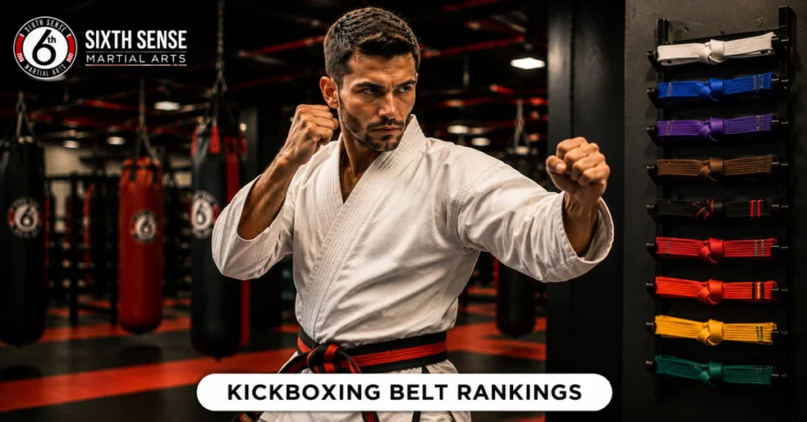
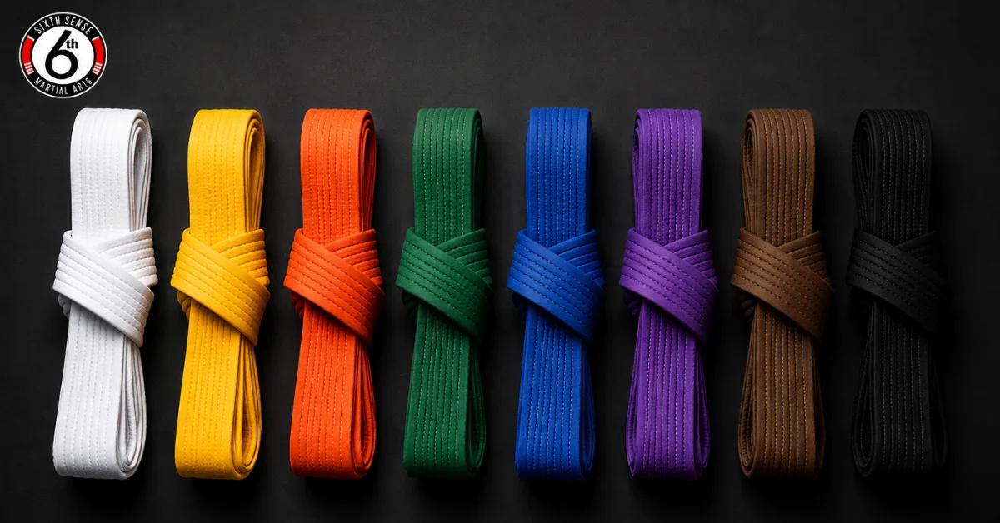
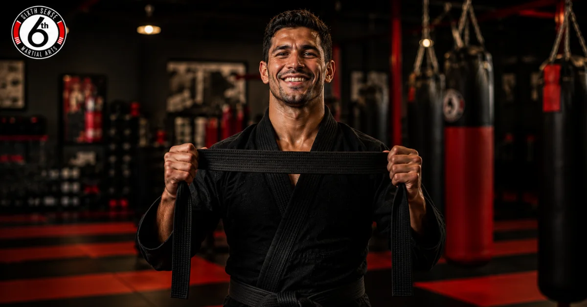

Kickboxing Belt Rankings From White Belt to Black Belt Shockingly Simple

Does Kickboxing Use Belts
Kickboxing belt rankings are one of the most motivating parts of training in this powerful martial art. When you first walk into a kickboxing gym, understanding where you stand and where you are headed makes all the difference. Unlike some combat sports that rely only on fight records, many kickboxing schools use a structured belt system to track progress and keep students motivated. If you are unsure which striking art suits you best, understanding Muay Thai vs Kickboxing can help you decide. Furthermore, each belt you earn represents real growth in your technique, fitness, and mental discipline. At Sixth Sense Martial Arts in Coppell, TX, we believe understanding the ranking system helps students train with purpose. Moreover, knowing what lies ahead gives you a clear goal to work toward every single time you step on the mat.
How the Belt System Works
The kickboxing belt system works similarly to karate and taekwondo ranking systems. Students begin as complete beginners and work through colored belts by demonstrating mastery of specific techniques and passing formal grading tests. Additionally, many schools use a stripe system within each belt level. Stripes are added as a student progresses through the curriculum for that rank. Once all stripes are earned, the student becomes eligible for a grading test. Furthermore, these tests grow more challenging as students advance through the ranks. Each test evaluates technique, sparring ability, physical conditioning, and overall knowledge of the art. Consequently, every belt earned reflects genuine skill and dedicated effort rather than simply time spent on the mat.
Full Kickboxing Belt Rankings Order
The standard kickboxing belt rankings system followed by most schools goes in this order from beginner to advanced.
| Belt Color | Level | Estimated Time to Earn |
| White | Beginner | Starting rank |
| Yellow | Elementary | 3 to 6 months |
| Orange | Novice | 6 to 9 months |
| Green | Intermediate | 9 to 12 months |
| Blue | Upper Intermediate | 12 to 18 months |
| Purple | Advanced | 18 to 24 months |
| Brown | Pre-Black | 24 to 36 months |
| Black | Master Level | 3 to 7 years total |
Belt ranking standards are recognized globally by organizations such as the World Association of Kickboxing Organizations. It is important to note that timelines vary depending on the school, training frequency, and individual progress. Additionally, some schools include a red belt at the beginning or between certain ranks. Therefore, always check with your specific gym about their exact ranking structure.

White Belt Where Every Champion Begins
The white belt is the starting point for every kickboxer regardless of background or fitness level. It represents a blank slate and a clean beginning full of potential. As a white belt, your focus is entirely on learning fundamental movements including basic punches like jabs, crosses, and hooks as well as foundational kicks such as the front kick and roundhouse kick. Furthermore, white belt training builds the physical conditioning base you will need at every level that follows. Most students spend their first three to six months at this rank. Moreover, this stage is really about building habits. Showing up consistently, listening to your instructor, and putting in genuine effort are the qualities that determine how quickly you move forward.
Yellow and Orange Belt Building the Foundation
Once you earn your yellow belt, your training starts to take real shape. At this level, you begin combining punches and kicks into basic combinations and develop a better sense of timing and rhythm. Additionally, your footwork and defensive awareness begin to improve noticeably. The orange belt follows and marks the point where many schools introduce light sparring for the first time. This is where kickboxing truly starts to feel like a martial art rather than just a fitness class. Furthermore, students at orange belt are expected to show cleaner technique, improved fitness, and a growing understanding of distance. Transitioning through these two belts typically takes six to twelve months of consistent training. As a result, students who reach orange belt have already built a strong foundation.
Green and Blue Belt Developing Real Skill
The green and blue belt stages represent a significant leap in skill development. At green belt, students are expected to execute combinations with confidence, control, and speed. Defensive techniques become more sophisticated and an understanding of counter-striking begins to develop. Moreover, this is where many students start to feel genuine competence on the mat. The blue belt takes things even further. Advanced combinations, improved sparring performance, and a deeper understanding of kickboxing strategy are all expected at this level. Furthermore, the physical demands of training increase considerably. Students at blue belt level are typically around two years into their journey and carry themselves with noticeable confidence and composure. Consequently, reaching blue belt signals the real transition from developing student to skilled practitioner.
Purple and Brown Belt The Road to Mastery
Purple and brown belt are the stages where kickboxers truly begin to refine their craft. At purple belt, the focus shifts from learning new techniques to perfecting the ones already learned. Sparring becomes more tactical and students are expected to apply techniques under pressure with real consistency. Additionally, leadership qualities begin to emerge as advanced students sometimes assist in teaching newer members. The brown belt is the final step before black belt and is often the most challenging rank to hold. Students at this level must demonstrate near-complete technical mastery, strong sparring ability, and deep knowledge of the full kickboxing system. Furthermore, brown belt practitioners often wait longer between grades because the standards are significantly higher. Therefore, earning a brown belt commands genuine respect in any kickboxing gym.
Black Belt The Ultimate Achievement
The black belt is the most recognized symbol in all of martial arts and kickboxing belt rankings are no exception. Earning a black belt in kickboxing typically takes between three and seven years of consistent dedicated training. However, it is important to understand that the black belt is not the end of the journey. It is actually the beginning of true mastery. Upon receiving a black belt, practitioners enter the dan ranking system starting at 1st Dan and progressing upward with continued training and teaching experience. Furthermore, reaching 5th Dan is considered the mark of a master and can take over twenty years to achieve. Consequently, the black belt represents not just technical skill but a lifetime of commitment to the art of kickboxing.

How Long Does It Take to Advance
One of the most common questions students ask is how long the entire belt journey takes. The honest answer is that it varies significantly based on several key factors. Training frequency is the biggest one. Students who train two to three times per week progress considerably faster than those who train once a week. Additionally, natural athleticism, prior martial arts experience, and the quality of instruction all play a role. On average, moving from one belt to the next takes between four and six months at most established kickboxing schools. Furthermore, grading tests become progressively more demanding as students advance. Therefore, the full journey from white belt to black belt realistically takes three to seven years for most dedicated students. Consistency and patience always matter more than rushing through the ranks.
Tips to Move Up the Rankings Faster
If you want to advance through the kickboxing belt rankings efficiently, there are several habits that will accelerate your progress. First, train consistently and aim for at least two to three sessions per week. Second, review your techniques outside of class through shadowboxing and bag work. Third, ask your instructor for specific feedback after each session and work on the areas identified. Additionally, sparring regularly helps translate technical skills into practical ability much faster than drilling alone. Following proven kickboxing training tips outside of class also accelerates your growth significantly. Furthermore, maintaining good physical conditioning through cardio and strength training supports your overall mat performance. Finally, approach each grading test with thorough preparation rather than relying on natural ability alone. Students who combine all of these habits consistently are the ones who advance steadily and earn each belt with genuine confidence.
Conclusion
Understanding kickboxing belt rankings gives every student a clear roadmap and a deeper sense of purpose in their training. From the white belt that marks your very first day to the black belt that represents years of dedicated work, every rank in this journey means something real. Moreover, the belt system is not just about colored fabric around your waist. It is about the discipline, resilience, and skill that each color truly represents. At Sixth Sense Martial Arts in Coppell, TX, our kickboxing program is built around structured progression that keeps students motivated and growing at every level. Whether you are just starting out or looking to advance to your next rank, we are here to guide you every step of the way. Come in for a free trial class and begin your kickboxing journey today.
Contact Us
Have questions about our kickboxing classes or belt ranking program? We would love to hear from you. Reach out to us today and let us help you start your martial arts journey the right way.
📍 817 S MacArthur Blvd #100, Coppell, TX 75019
📞 (469) 972-7800
📧 info@sixthsensemma.com
Follow Us on Social Media
Stay connected with the Sixth Sense Martial Arts community. Follow us for training tips, belt grading updates, student highlights, and exclusive offers.
FAQ’s
No, not all gyms use belts. Competitive styles like K-1 rank fighters by fight records. However, most traditional kickboxing schools use a structured belt system to track progress and reward dedication.
The black belt is the highest. Beyond that, practitioners progress through dan rankings from 1st Dan upward. Reaching 5th Dan is considered master level and typically takes over twenty years of training.
Most students earn a black belt in three to seven years depending on training frequency and school standards. Training two to three times per week consistently is the most reliable path forward.
Each color marks a stage of growth. White is the beginner stage. Yellow and orange build the foundation. Green and blue develop real skill. Purple and brown signal advanced mastery. Black represents full dedication and technical excellence.
Most reputable schools do not allow belt skipping. Each rank builds on the previous one. Students with prior martial arts experience may be evaluated and placed at an appropriate starting level.
Students demonstrate required techniques, complete a fitness assessment, and spar at intermediate and advanced levels. Instructors evaluate technique, conditioning, and composure. Regular attendance and instructor approval are required before grading.
Train with us in Coppell
The first class is free. Shorts, a t-shirt and a water bottle. We lend the rest.
Book a free class